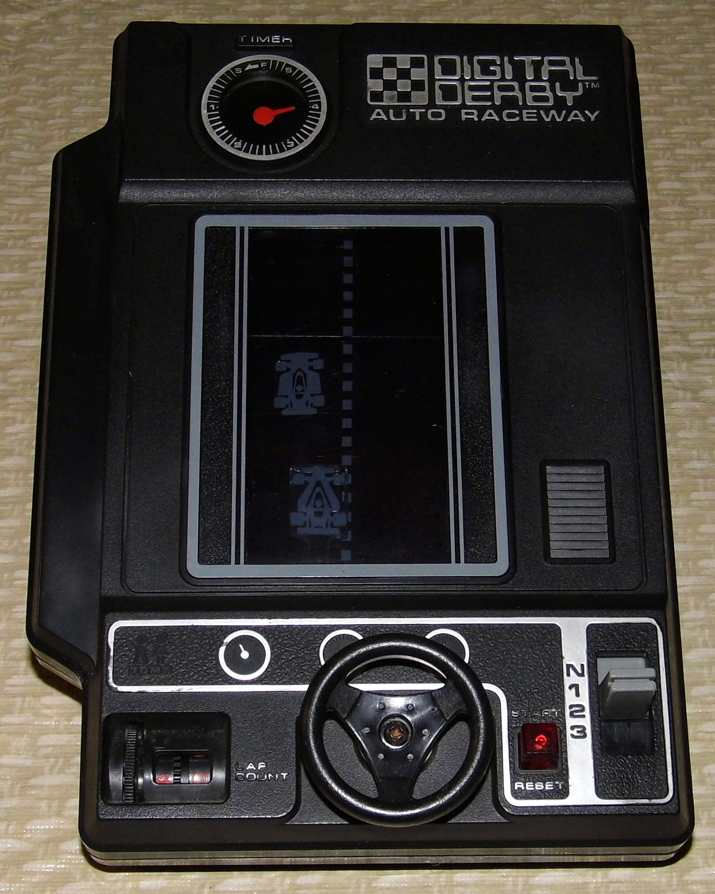

Tomy Digital Derby (1978)
A palm-sized race you steer with a physical wheel, not a switch

Overview
Released in 1978, Tomy Digital Derby (model 7034, sold abroad as Black Racer, Demon Driver, and Formula 1) is an electro-mechanical handheld racing game. Two C batteries power an electric motor, a lap counter, an automatic timer, and a scrolling mechanical raceway. It belongs to the tail end of the electro-mechanical handheld era, just before LED and LCD games displaced the format — the same "lights + moving parts + sound" formula as Mattel Auto Race, but with a strikingly different input.
The interaction model is the point. There are no buttons. The player steers a race car at the base of the display with a small three-spoke steering wheel, guiding it through oncoming traffic on a mechanically scrolling roadway. A separate gear lever speeds up or slows down the oncoming obstacles, while a lap counter tracks progress. Collide with an oncoming car and a red light flashes and the whole field freezes, requiring a reset before play resumes. Each race runs one full cycle of the timer; the player with the most laps wins.
Deep dive
Where Mattel Auto Race (1976, in the museum) steers across fixed lanes with slide levers, the Digital Derby puts a physical three-spoke wheel in your hand and drives a mechanically scrolling raceway. Steering is continuous and rotary; a separate gear lever adds speed control. Two independent, analog-style mechanical gestures drive a single motor-operated race — the palm-sized ancestor of the steering-wheel "driving controller" paradigm.
The game uses a small motor and a scrolling display mechanism rather than a pixel grid. The image of the road and cars is mechanical, lit by ordinary flashlight-style bulbs rather than a software-driven LED matrix.
Colliding with oncoming traffic lights a red light and freezes the field; the player must reset the game before continuing. The lap counter and a mechanical timer bound each race to a single timer cycle, so victory is a race against a physical clock rather than a fixed number of laps.
Team & pioneers
- Tomy (Tomy Kogyo Co.) Japanese toy manufacturer that produced the Digital Derby electro-mechanical handheld line